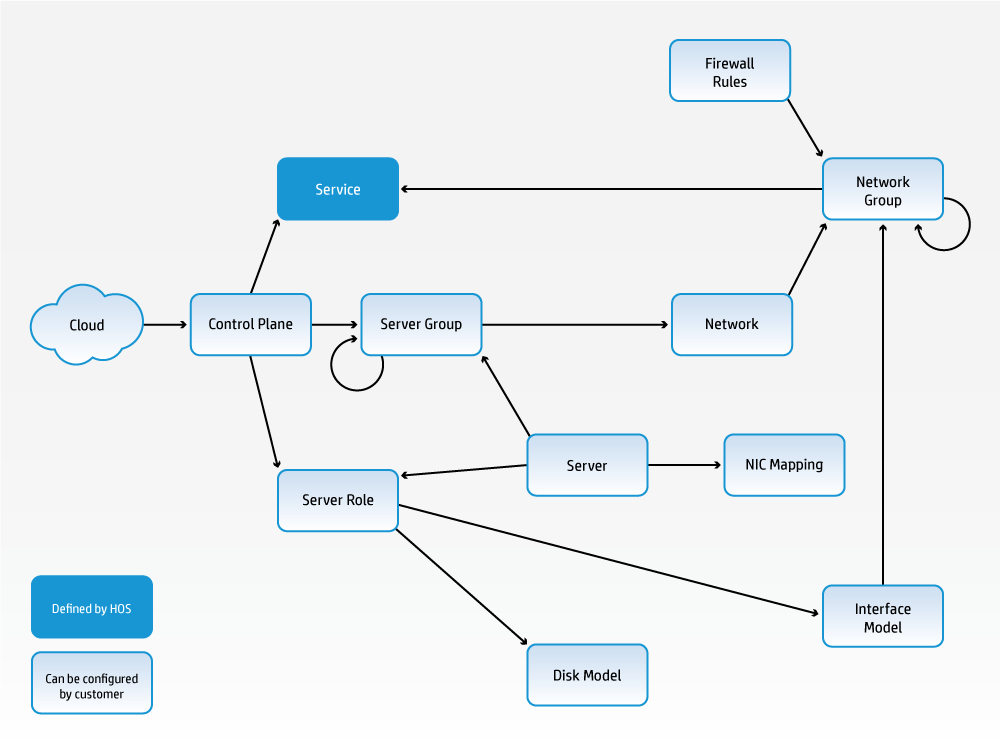
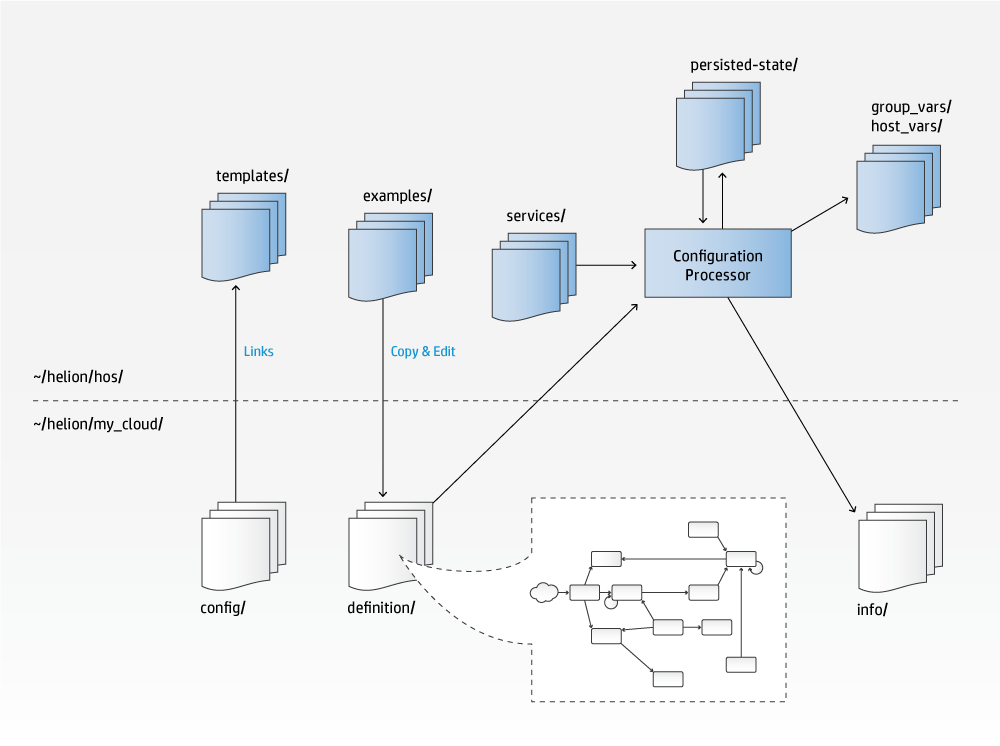
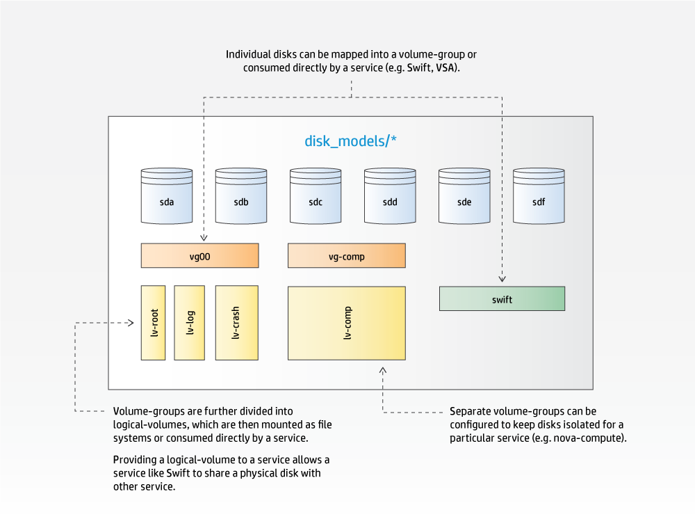
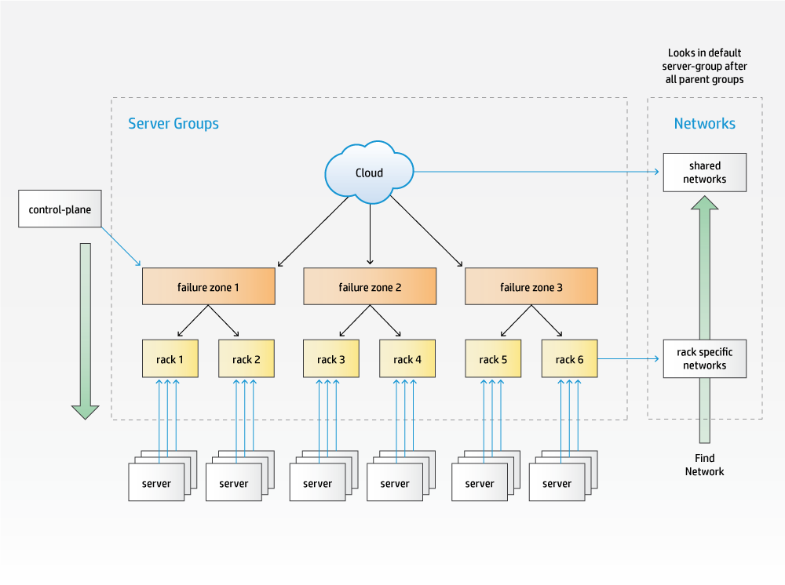
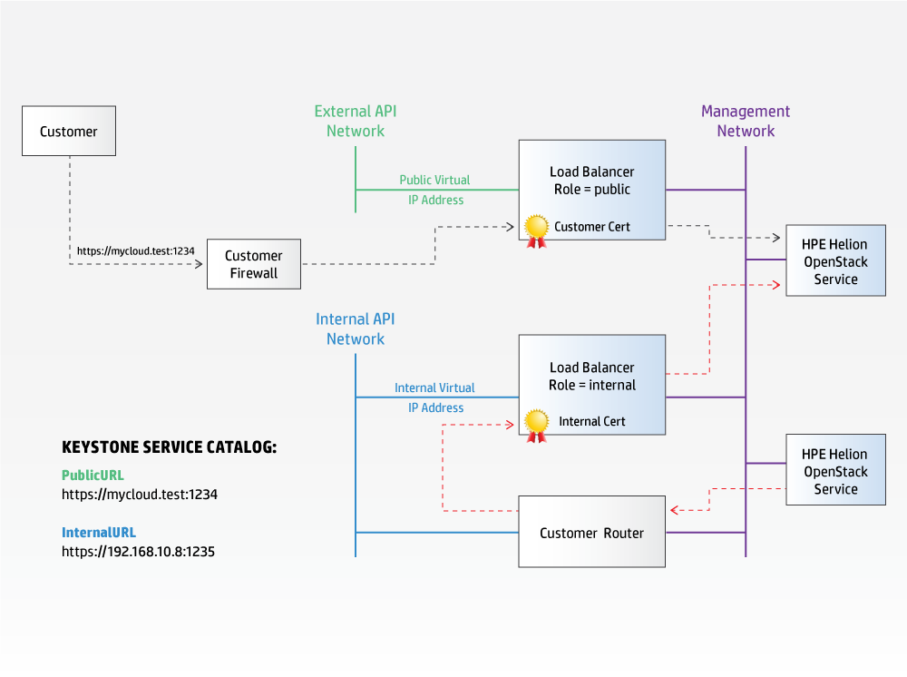
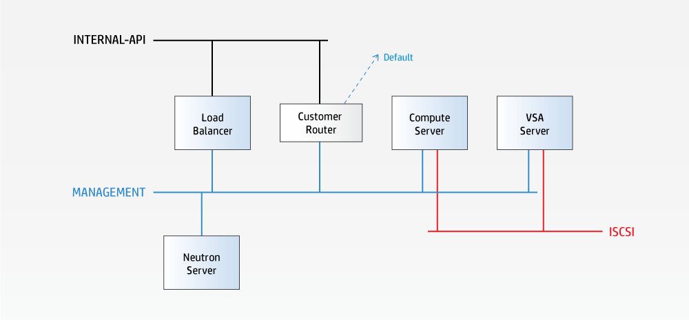

This document describes how the HPE Helion OpenStack input model can be used to define and configure the cloud.
HPE Helion OpenStack ships Kilo with a set of example input models that can be used as starting points for defining a custom cloud.
The input model allows you, the cloud administrator, to describe the cloud configuration in terms of:
The input model is consumed by the Configuration Processor which parses and validates the input model and outputs the effective configuration that will be deployed to each server that makes up your cloud.
The document is structured as follows:
An HPE Helion OpenStack 2.0 cloud is defined by a declarative model that is described in a series of configuration objects. These configuration objects are represented in YAML files which together constitute the various example configurations provided as templates with this release. These examples can be used nearly unchanged, with the exception of necessary changes to IP addresses and other site and hardware-specific identifiers. Alternatively, the examples may be customized to meet site requirements.
The following diagram shows the set of configuration objects and their relationships. All objects have a name that you may set to be something meaningful for your context. In the examples these names are provided in capital letters as a convention. These names have no significance to HPE Helion OpenStack, rather it is the relationships between them that define the configuration.

The Configuration Processor reads and validates the input model described in the YAML files discussed above, combines it with the service definitions provided by HPE Helion OpenStack and any persisted state information about the current deployment to produce a set of Ansible variables that can be used to deploy the cloud. It also produces a set of information files that provide details about the configuration.
The relationship between the file systems on the HPE Helion OpenStack deployment server and the Configuration Processor is shown in the following diagram. Below the line are the directories that you, the cloud administrator, interact with. Above the line are the directories that are maintained by HPE Helion OpenStack.

The input model is read from the ~/helion/my_cloud/definition directory. Although the supplied examples use separate files for each type of object in the model, the names and layout of the files have no significance to the Configuration Processor, it simply reads all of the .yml files in this directory. Cloud administrators are therefore free to use whatever structure is best for their context. For example, you may decide to maintain separate files or sub-directories for each physical rack of servers.
As mentioned, the examples use the conventional upper casing for object names, but these strings are used only to define the relationship between objects. They have no specific significance to the Configuration Processor.
The Cloud definition includes a few top-level configuration values such as the name of the cloud, the host prefix, details of external services (NTP, DNS, SMTP) and the firewall settings.
The location of the cloud configuration file also tells the Configuration Processor where to look for the files that define all of the other objects in the input model.
A control-plane runs one or more services distributed across clusters and resource groups.
A control-plane uses servers with a particular server-role.
A control-plane provides the operating environment for a set of services; normally consisting of a set of shared services (MySQL, RabbitMQ, HA Proxy, Apache, etc), OpenStack control services (API, schedulers, etc) and the resources they are managing (compute, storage, etc).
A simple cloud may have a single control-plane which runs all of the services. A more complex cloud may have multiple control-planes with a relationship between them. (Note that HP Helion OpenStack 2.0 only supports a single control-plane). Services that need to consume (use) another service (such as Neutron consuming MySQL, Nova consuming Neutron) always use the service within the same control-plane before looking in any related control-planes. It is one of the functions of the Configuration Processor to resolve these relationships and make sure that each consumer/service is provided with the configuration details to connect to the appropriate provider/service.
Each control-plane is structured as clusters and resources. The clusters are typically used to host the OpenStack services that manage the cloud such as API servers, database servers, Neutron agents, and Swift proxies, while the resources are used to host the scale-out OpenStack services such as Nova-Compute or Swift-Object services. This is a representation convenience rather than a strict rule, for example it is possible to run the Swift-Object service in the management cluster in a smaller-scale cloud that is not designed for scale-out object serving.
A cluster can contain one or more servers and you can have one or more clusters depending on the capacity and scalability needs of the cloud that you are building. Spreading services across multiple clusters provides greater scalability, but it requires a greater number of physical servers. A common pattern for a large cloud is to run high data volume services such as monitoring and logging in a separate cluster. A cloud with a high object storage requirement will typically also run the Swift service in its own cluster.
Clusters in this context are a mechanism for grouping service components in physical servers, but all instances of a component in a control-plane work collectively. For example, if HA Proxy is configured to run on multiple clusters within the same control-plane then all of those instances will work as a single instance of the ha-proxy service.
Both clusters and resources define the type (via a list of server-roles) and number of servers (min and max or count) they require.
The control-plane can also define a list of failure-zones (server-groups) from which to allocate servers.
A region in OpenStack terms is a collection of URLs that together provide a set of services (Nova, Neutron, Swift, etc). Regions are represented in the Keystone identity service catalog and clients can decide which region they want to use.
For the owner of a cloud, regions provide a way of segmenting resources for scale, resilience, and isolation. However, each region needs some resources for its control-plane.
Regions don't have to be disjointed; for example, you can have a Swift service shared across more than one region, in which case the Swift URL for both regions will be the same. However, some services, such as Nova, Neutron, and Cinder, do have to be co-located in the same region.
Thus in the cloud model we say that a control-plane may provide some or all of the endpoints for one or more Regions.
A control-plane runs one or more services.
A service is the collection of service-components that provide a particular feature; for example, Nova provides the compute service and consists of the following service-components: nova-api, nova-scheduler, nova-conductor, nova-novncproxy, and nova-compute. Some services, like the authentication/identity service Keystone, only consist of a single service-component.
To define your cloud, all you need to know about a service are the names of the service-components. The details of the services themselves and how they interact with each other is captured in service definition files provided by HPE Helion OpenStack.
When specifying your HPE Helion OpenStack cloud you have to decide where components will run and how they connect to the networks. For example, should they all run in one control-plane sharing common services or be distributed across multiple control-planes to provide separate instances of some services? The HPE Helion OpenStack supplied examples provide solutions for some typical configurations.
Where services run is defined in the control-plane. How they connect to networks is defined in the network-groups.
Clusters and resources use servers with a particular server-role.
You're going to be running the services on physical servers, and you're going to need a way to specify which type of servers you want to use where. This is defined via the server-role. Each server-role describes how to configure the physical aspects of a server to fulfill the needs of a particular role. You'll generally use a different role whenever the servers are physically different (have different disks or network interfaces) or if you want to use some specific servers in a particular role (for example to choose which of a set of identical servers are to be used in the control plane).
Each physical disk device is associated with a device-group or a volume-group.
Device-groups are consumed by services.
Volume-groups are divided into logical-volumes.
Logical-volumes are mounted as file systems or consumed by services.
Disk-models define how local storage is to be configured and presented to services. Disk-models are identified by a name, which you will specify. The HPE Helion OpenStack examples provide some typical configurations. As this is an area that varies with respect to the services that are hosted on a server and the number of disks available, it is impossible to cover all possible permutations you may need to express via modifications to the examples.
Within a disk-model, disk devices are assigned to either a device-group or a volume-group.

A device-group is a set of one or more disks that are to be consumed directly by a service. For example, a set of disks to be used by Swift. The device-group identifies the list of disk devices, the service, and a few service-specific attributes that tell the service about the intended use (for example, in the case of Swift this is the ring names). When a device is assigned to a device-group, the associated service is responsible for the management of the disks. This management includes the creation and mounting of file systems. (Swift can provide additional data integrity when it has full control over the file systems and mount points.)
A volume-group is used to present disk devices in a LVM volume group. It also contains details of the logical volumes to be created including the file system type and mount point. Logical volume sizes are expressed as a percentage of the total capacity of the volume group. A logical-volume can also be consumed by a service in the same way as a device-group. This allows services to manage their own devices on configurations that have limited numbers of disk drives.
Servers have a server-role which determines how they will be used in the cloud.
Servers (in the disk model) enumerate the resources available for your cloud. In addition, in this definition file you can either provide HPE Helion OpenStack with all of the details it needs to PXE boot and install an operating system onto the server, or, if you prefer to use your own operating system installation tooling you can simply provide the details needed to be able to SSH into the servers and start the deployment.
The address specified for the server will be the one used by HPE Helion OpenStack for lifecycle management and must be part of a network which is in the input model. If you are using HPE Helion OpenStack to install the operating system this network must be an untagged VLAN. The first server must be installed manually from the HPE Helion OpenStack ISO and this server must be included in the input model as well.
In addition to the network details used to install or connect to the server, each server defines what its server-role is and to which server-group it belongs.
A server is associated with a server-group.
A control-plane can use server-groups as failure zones for server allocation.
A server-group may be associated with a list of networks.
A server-group can contain other server-groups.
The practice of locating physical servers in a number of racks or enclosures in a data center is common. Such racks generally provide a degree of physical isolation that allows for separate power and/or network connectivity.
In the HPE Helion OpenStack model we support this configuration by allowing you to define a hierarchy of server-groups. Each server is associated with one server-group, normally at the bottom of the hierarchy.
Server-groups are an optional part of the input model – if you don’t define any then all servers and networks will be allocated as if they are part of the same server-group.
A control-plane defines a list of server-groups as the failure zones from which it wants to use servers. All servers in a server-group listed as a failure zone in the control-plane and any server-groups they contain are considered part of that failure zone for allocation purposes. The following example shows how three levels of server-groups can be used to model a failure zone consisting of multiple racks, each of which in turn contains a number of servers.

When allocating servers, the Configuration Processor will traverse down the hierarchy of server-groups listed as failure zones until it can find an available server with the required server-role. If the allocation policy is defined to be strict, it will allocate servers equally across each of the failure zones. A cluster or resource-group can also independently specify the failure zones it wants to use if needed.
Each L3 network in a cloud must be associated with all or some of the servers, typically following a physical pattern (such as having separate networks for each rack or set of racks). This is also represented in the HPE Helion OpenStack model via server-groups, each group lists zero or more networks to which servers associated with server-groups at or below this point in the hierarchy are connected.
When the Configuration Processor needs to resolve the specific network a server should be configured to use, it traverses up the hierarchy of server-groups, starting with the group the server is directly associated with, until it finds a server-group that lists a network in the required network group.
The level in the server-group hierarchy at which a network is associated will depend on the span of connectivity it must provide. In the above example there might be networks in some network-groups which are per rack (i.e. Rack 1 and Rack 2 list different networks from the same network-group) and networks in a different network-group that span failure zones (the network used to provide floating IP addresses to virtual machines for example).
In addition to the mapping of services to specific clusters and resources we must also be able to define how the services connect to one or more networks.
In a simple cloud there may be a single L3 network but more typically there are functional and physical layers of network separation that need to be expressed.
Functional network separation provides different networks for different types of traffic; for example, it is common practice in even small clouds to separate the External APIs that users will use to access the cloud and the external IP addresses that users will use to access their virtual machines. In more complex clouds it's common to also separate out virtual networking between virtual machines, block storage traffic, and volume traffic onto their own sets of networks. In the input model, this level of separation is represented by network-groups.
Physical separation is required when there are separate L3 network segments providing the same type of traffic; for example, where each rack uses a different subnet. This level of separation is represented in the input model by the networks within each network-group.
Service endpoints attach to networks in a specific network-group.
Network-groups can define routes to other networks.
Network-groups encapsulate the configuration for services via network-tags
A network-group defines the traffic separation model and all of the properties that are common to the set of L3 networks that carry each type of traffic. They define where services are attached to the network model and the routing within that model.
In terms of service connectivity, all that has to be captured in the network-groups definition is the same service-component names that are used when defining control-planes. HPE Helion OpenStack also allows a default attachment to be used to specify "all service-components" that aren't explicitly connected to another network-group. So, for example, to isolate Swift traffic, the swift-account, swift-container, and swift-object service components are attached to an "Object" network-group and all other services are connected to "Management" network-group via the default relationship.
The details of how each service connects, such as what port it uses, if it should be behind a load balancer, if and how it should be registered in Keystone, and so forth, are defined in the service definition files provided by HPE Helion OpenStack.
In any configuration with multiple networks, controlling the routing is a major consideration. In HPE Helion OpenStack, routing is controlled at the network-group level. First, all networks are configured to provide the route to any other networks in the same network-group. In addition, a network-group are configured to provide the route any other networks in the same network-group; for example, if the internal APIs are in a dedicated network-group (a common configuration in a complex network because a network group with load balancers cannot be segmented) then other network-groups may need to include a route to the internal API network-group so that services can access the internal API endpoints. Routes may also be required to define how to access an external storage network or to define a general default route.
As part of the HPE Helion OpenStack deployment, networks are configured to act as the default route for all traffic that was received via that network (so that response packets always return via the network the request came from).
Note that HPE Helion OpenStack will configure the routing rules on the servers it deploys and will validate that the routes between services exist in the model, but ensuring that gateways can provide the required routes is the responsibility of your network configuration. The Configuration Processor provides information about the routes it is expecting to be configured.
For a detailed description of how the Configuration Processor validates routes, refer to Network Route Validation.
Load-balancers provide a specific type of routing and are also defined in network-groups as a relationship between the virtual IP address (VIP) on a network in one network group and a set of service endpoints (which may be on networks in the same or a different network-group).
Each load-balancer is defined as part of the network-group where the virtual IP will be presented – it follows that a network-group containing a load-balancer can only have one network associated to it.
The load-balancer definition includes a list of service-components and endpoint roles it will provide A virtual IP for. This model allows service-specific load-balancers to be defined on different network-groups. A "default" value is used to express "all service-components" which require a virtual IP address and are not explicitly configured in another load-balancer configuration. The details of how the load-balancer should be configured for each service, such as which ports to use, how to check for service liveness, etc, are provided in the HPE Helion OpenStack supplied service definition files.
The list of endpoint roles for a load-balancer make it possible to configure separate load-balancers for public and internal access to services, and the Configuration Processor uses this information to both ensure the correct registrations in Keystone and to make sure the internal traffic is routed to the correct endpoint. HPE Helion OpenStack services are configured to only connect to other services via internal virtual IP addresses and endpoints, allowing the name and security certificate of public endpoints to be controlled by the customer and set to values that may not be resolvable/accessible from the servers making up the cloud.
Note that each load-balancer defined in the input model will be allocated a separate virtual IP address even when the load-balancers are part of the same network-group. Because of the need to be able to separate both public and internal access, HPE Helion OpenStack will not allow a single load-balancer to provide both public and internal access. Load-balancers in this context are logical entities (sets of rules to transfer traffic from a virtual IP address to one or more endpoints). Multiple load-balancers may be implemented by the same service within the cloud (e.g. a HA Proxy cluster).
The following diagram shows a possible configuration in which the hostname associated with the public URL has been configured to resolve to a firewall controlling external access to the cloud. Within the cloud, HPE Helion OpenStack services are configured to use the internal URL to access a separate virtual IP address.

Network tags are defined by some HPE Helion OpenStack service-components and are used to convey information between the network model and the service, allowing the dependent aspects of the service to be automatically configured. For example, an option in a service configuration file that needs the IP address of the corresponding network device on a server where that service-component is installed.
Network tags also convey requirements a service may have for aspects of the server network configuration, for example, that a bridge is required on the corresponding network device on a server where that service-component is installed.
See Network Tags for more information on specific tags and their usage.
A network is part of a network-group.
Networks are fairly simple definitions. Each network defines the details of its VLAN, optional address details (CIDR, start and end address, gateway address), and which network-group it is a member of.
A server-role identifies an interface-model that describes how its network interfaces are to be configured and used.>
Networks are mapped onto specific network interfaces via an interface-model, which describes the network devices that need to be created (bonds, ovs-bridges, etc), their properties, and the network-groups with which they are associated.
An interface-model acts like a template; it can define how some or all of the network-groups are to be mapped for a particular combination of physical NICs. However, it is the service-components on each server that determine which network-groups are required and hence which interfaces and networks will be configured. This means that interface-models can be shared between different server-roles. For example, an API role and a database role may share an interface model even though they may have different disk models and they will require a different subset of the network-groups.
Within an interface-model, physical ports are identified by a device name, which in turn is resolved to a physical port via a nic-mapping. To allow different physical servers to share an interface-model, the nic-mapping is defined as a property of each server.
When a server has more than a single physical network port, a nic-mapping is required to unambiguously identify each port. Standard Linux mapping of ports to interface names at the time of initial discovery (e.g. eth0, eth1, eth2, ...) is not uniformly consister from server to server, so a mapping of PCI bus address to interface name is instead.
This level of abstraction will also allow network functions on SRIOV-capable network cards to be used for network connections and consumed by services in a future release.
The Configuration Processor uses the details it has about which networks and ports service-components use to create a set of firewall rules for each server. The model allows additional user-defined rules on a per network-group basis.
The top-level cloud configuration file, cloudConfig.yml, defines some global values for the HPE Helion OpenStack Cloud, as described in the table below.
| Key | Value Description |
|---|---|
| name | An administrator-defined name for the cloud |
| hostname-data (optional) | Provides control over some parts of the generated names (see Name Generation) Consists of two
values:
|
| ntp-servers (optional) | A list of external NTP servers your cloud has access to. If specified by name then the names need to be resolvable via the external DNS nameservers you specify in the next section. All servers running the "ntp-server" component will be configured to use these external NTP servers. |
| dns-settings (optional) | DNS configuration data that will be applied to all servers. See example configuration for a full list of values. |
| smtp-settings (optional) | SMTP client configuration data that will be applied to all servers. See example configurations for a full list of values. |
| firewall-settings (optional) | Used to enable/disable the firewall feature and to enable/disable logging of dropped packets. |
The snippet below shows the start of the control plane definition file.
---
product:
version: 2
control-planes:
- name: control-plane-1
control-plane-prefix: cp1
region-name: region1
failure-zones:
- AZ1
- AZ2
- AZ3
common-service-components:
- logging-producer
- monasca-agent
- freezer-agent
- stunnel
- lifecycle-manager-target
clusters:
- name: cluster1
cluster-prefix: c1
server-role: CONTROLLER-ROLE
member-count: 3
allocation-policy: strict
service-components:
- lifecycle-manager
- ntp-server
- swift-ring-builder
- mysql
- ip-cluster
...
resources:
- name: compute
resource-prefix: comp
server-role: COMPUTE-ROLE
allocation-policy: any
min-count: 0
service-components:
- ntp-client
- nova-compute
- nova-compute-kvm
- neutron-l3-agent
...
| Key | Value Description |
|---|---|
| name | This name identifies the control plane. This value is used to persist server allocations (see Persisted Data) and cannot be changed once servers have been allocated. |
| control-plane-prefix (optional) | The control-plane-prefix is used as part of the hostname (see Name Generation). If not specified, the control plane name is used. |
| region-name | This name identifies the Keystone region within which services in the control plane will be registered. |
| common-service-components (optional) | This lists a set of service components that run on all servers in the control plane (clusters and resource pools) |
| failure-zones (optional) | A list of server-group names that servers for this control plane will be allocated from. If no failure-zones are specified, only servers not associated with a server-group will be used. (see Server Groups and Failure Zones for a description of server-groups as failure zones.) |
| clusters | A list of clusters for this control plane (see Clusters). |
| resources | A list of resource groups for this control plane (see Resources). |
| Key | Value Description |
|---|---|
| name | Cluster and resource names must be unique within a control plane. This value is used to persist server allocations (see Persisted Data) and cannot be changed once servers have been allocated. |
| cluster-prefix (optional) | The cluster prefix is used in the hostname (see Name Generation). If not supplied then the cluster name is used. |
| server-role | This can either be a string (for a single role) or a list of roles. Only servers matching one of the specified server-roles will be allocated to this cluster. (see Server Roles for a description of server roles) |
| service-components | The list of service-components to be deployed on the servers allocated for the cluster. (The common-service-components for the control plane are also deployed.) |
|
member-count min-count max-count (all optional) |
Defines the number of servers to add to the cluster. The number of servers that can be supported in a cluster depends on the services it is running. For example MySQL and RabbitMQ can only be deployed on clusters on 1 (non-HA) or 3 (HA) servers. Other services may support different sizes of cluster. If min-count is specified, then at least that number of servers will be allocated to the cluster. If min-count is not specified it defaults to a value of 1. If max-count is specified, then the cluster will be limited to that number of servers. If max-count is not specified then all servers matching the required role and failure-zones will be allocated to the cluster. Specifying member-count is equivalent to specifying min-count and max-count with the same value. |
| failure-zones (optional) | A list of server-groups that servers will be allocated from. If specified, it overrides the list of values specified for the control-plane. If not specified, the control-plane value is used. (see Server Groups and Failure Zones for a description of server groups as failure zones). |
| allocation-policy (optional) |
Defines how failure zones will be used when allocating servers. strict: Server allocations will be distributed across all specified failure zones. (if max-count is not a whole number, an exact multiple of the number of zones, then some zones may provide one more server than other zones) any: Server allocations will be made from any combination of failure zones. The default allocation-policy for a cluster is strict . |
| Key | Value Description |
|---|---|
| name | The name of this group of resources. Cluster names and resource-node names must be unique within a control plane. Additionally, clusters and resources cannot share names within a control-plane. This value is used to persist server allocations (see Persisted Data) and cannot be changed once servers have been allocated. |
| resource-prefix | The resource-prefix is used in the name generation. (see Name Generation) |
| server-role | This can either be a string (for a single role) or a list of roles. Only servers matching one of the specified server-roles will be allocated to this resource group. (see Server Roles for a description of server roles). |
| service-components | The list of service-components to be deployed on the servers in this resource group. (The common-service-components for the control plane are also deployed.) |
|
member-count min-count max-count (all optional) |
Defines the number of servers to add to the cluster. The number of servers that can be supported in a cluster depends on the services it is running. For example MySQL and RabbitMQ can only be deployed on clusters on 1 (non-HA) or 3 (HA) servers. Other services may support different sizes of cluster. If min-count is specified, then at least that number of servers will be allocated to the cluster. If min-count is not specified it defaults to a value of 1. If max-count is specified, then the cluster will be limited to that number of servers. If max-count is not specified then all servers matching the required role and failure-zones will be allocated to the cluster. Specifying member-count is equivalent to specifying min-count and max-count with the same value. |
| failure-zones (optional) | A list of server-groups that servers will be allocated from. If specified, it overrides the list of values specified for the control-plane. If not specified, the control-plane value is used. (see Server Groups and Failure Zones for a description of server groups as failure zones). |
| allocation-policy (optional) |
Defines how failure zones will be used when allocating servers. strict: Server allocations will be distributed across all specified failure zones. (if max-count is not a whole number, an exact multiple of the number of zones, then some zones may provide one more server than other zones) any: Server allocations will be made from any combination of failure zones. The default allocation-policy for a cluster is any . |
The servers configuration object is used to list the available servers for deploying the cloud.
Optionally, it can be used as an input file to the operating system installation process, in which case some additional fields (identified below) will be necessary.
---
product:
version: 2
baremetal:
subnet: 192.168.10.0
netmask: 255.255.255.0
servers:
- id: controller1
ip-addr: 192.168.10.3
role: CONTROLLER-ROLE
server-group: RACK1
nic-mapping: HP-DL360-4PORT
mac-addr: b2:72:8d:ac:7c:6f
ilo-ip: 192.168.9.3
ilo-password: password
ilo-user: admin
- id: controller2
ip-addr: 192.168.10.4
role: CONTROLLER-ROLE
server-group: RACK2
nic-mapping: HP-DL360-4PORT
mac-addr: 8a:8e:64:55:43:76
ilo-ip: 192.168.9.4
ilo-password: password
ilo-user: admin
| Key | Value Description |
|---|---|
| id | An administrator-defined identifier for the server. IDs must be unique and are used to track server allocations. (see Persisted Data). |
| ip-addr |
The IP address is used by the Configuration Processor to install and configure the service components on this server. This IP address must be within the range of a network defined in this model. When the servers file is being used for operating system installation, this IP address will be assigned to the node by the installation process, and the associated network must be an untagged VLAN. |
| role | Identifies the server-role of the server. (see Server Roles for a description of server roles) |
| nic-mapping | Name of the nic-mappings entry to apply to this server. (see NIC Mappings) |
| server-group (optional) | Identifies the server-groups entry that this server belongs to. (see Server Groups) |
| mac-addr (optional) | Needed when servers file is being used for operating system installation. This identifies the MAC address on the server that will be used to network install the operating system. |
| kopt-extras (optional) | Provides additional command line arguments to be passed to the booting network kernel. For example, vga=769 sets the video mode for the install to low resolution which can be useful for remote console users. |
| ilo-ip (optional) | Needed when servers file is being used for operating system installation. This provides the IP address of the power management (e.g. IPMI, iLO) subsystem. |
| ilo-user (optional) | Needed when servers file is being used for operating system installation. This provides the user name of the power management (e.g. ipmi-ip, iLO) subsystem. |
| ilo-password (optional) | Needed when servers file is being used for operating system installation. This provides the user password of the power management (e.g. ipmi-ip, iLO) subsystem. |
| ilo-extras (optional) | Needed when servers file is being used for operating system installation. Additional options to pass to ipmitool. For example, this may be required if the servers require additional IPMI addressing parameters. |
| moonshot (optional) | Provides the node identifier for HPE Moonshot servers, e.g. c4n1 where c4 is the cartridge and n1 is node 1. |
The server-groups configuration object provides a mechanism for organizing servers and networks into a hierarchy that can be used for allocation and network resolution (see Server Groups).
---
product:
version: 2
- name: CLOUD
server-groups:
- AZ1
- AZ2
- AZ3
networks:
- EXTERNAL-API-NET
- EXTERNAL-VM-NET
- GUEST-NET
- MANAGEMENT-NET
#
# Create a group for each failure zone
#
- name: AZ1
server-groups:
- RACK1
- name: AZ2
server-groups:
- RACK2
- name: AZ3
server-groups:
- RACK3
#
# Create a group for each rack
#
- name: RACK1
- name: RACK2
- name: RACK3
| Key | Value Description |
|---|---|
| name | An administrator-defined name for the server group. The name is used to link server-groups together and to identify server-groups to be used as failure zones in a control-plane. (see Control Plane) |
| server-groups (optional) | A list of server-group names that are nested below this group in the hierarchy. Each server group can only be listed in one other server group (i.e. in a strict tree topology). |
| networks (optional) | A list of network names (see Networks). See Server Groups and Networks for a description of how networks are matched to servers via server groups. |
The server-roles configuration object is a list of the various server roles that you can use in your cloud. Each server role is linked to two other configuration objects:
Server roles are referenced in the servers (see Servers) configuration object above.
---
product:
version: 2
server-roles:
- name: CONTROLLER-ROLE
interface-model: CONTROLLER-INTERFACES
disk-model: CONTROLLER-DISKS
- name: COMPUTE-ROLE
interface-model: COMPUTE-INTERFACES
disk-model: COMPUTE-DISKS
- name: VSA-ROLE
interface-model: VSA-INTERFACES
disk-model: VSA-DISKS
| Key | Value Description |
|---|---|
| name | An administrator-defined name for the role. |
| interface-model | The name of the interface-model to be used for this
server-role. Different server-roles can use the same interface-model. |
| disk-model | The name of the disk-model to use for this
server-role. Different server-roles can use the same disk-model. |
The disk-models configuration object is used to specify how the directly attached disks on the server should be configured. It can also identify which service or service component consumes the disk, e.g. Swift object server, and provide service-specific information associated with the disk.
Disks can be used as raw devices or as logical volumes and the disk model provides a configuration item for each.
If the operating system has been installed by the HPE Helion OpenStack installation process then the root disk will already have been set up as a volume-group with a single logical-volume. This logical-volume will have been created on a partition identified, symbolically, in the configuration files as /dev/sda_root. This is due to the fact that different BIOS systems (UEFI, Legacy) will result in different partition numbers on the root disk.
---
product:
version: 2
disk-models:
- name: VSA-DISKS
volume-groups:
- ...
device-groups:
- ...
| Key | Value Description |
|---|---|
| name | The name of the disk-model that is referenced from one or more server-roles. |
| volume-groups | A list of volume-groups to be configured (see below). There must be at least one volume-group describing the root file system. |
| device-groups (optional) | A list of device-groups (see below) |
The volume-groups configuration object is used to define volume groups and their constituent logical volumes.
Note that volume-groups are not exact analogs of device-groups. A volume-group specifies a set of physical volumes used to make up a volume-group that is then subdivided into multiple logical volumes.
The HPE Helion OpenStack operating system installation automatically creates a volume-group name "hlm-vg" on the first drive in the system. It creates a "root" logical volume there. The volume-group can be expanded by adding more physical-volumes (see examples). In addition, it is possible to create more logical-volumes on this volume-group to provide dedicated capacity for different services or file system mounts.
volume-groups:
- name: hlm-vg
physical-volumes:
- /dev/sda_root
logical-volumes:
- name: root
size: 35%
fstype: ext4
mount: /
- name: log
size: 50%
mount: /var/log
fstype: ext4
mkfs-opts: -O large_file
- ...
- name: vg-comp
physical-volumes:
- /dev/sdb
logical-volumes:
- name: compute
size: 95%
mount: /var/lib/nova
fstype: ext4
mkfs-opts: -O large_file
| Key | Value Descriptions |
|---|---|
| name | The name that will be assigned to the volume-group |
| physical-volumes | A list of physical disks that make up the volume group. As installed by the HPE Helion OpenStack operating system install process, the volume group "hlm-vg" will use a large partition (sda_root) on the first disk. This can be expanded by adding additional disk(s). |
| logical-volumes | A list of logical volume devices to create from the above named volume group. |
| name | The name to assign to the logical volume. |
| size | The size, expressed as a percentage of the entire volume group capacity, to assign to the logical volum.e |
| fstype (optional) | The file system type to create on the logical volume. If non specified the volume is not formatted. |
| mkfs-opts (optional) | Options, e.g. -O large_file to pass to the mkfs command. |
| mount (optional) | Mount point for the file system. |
| consumer attributes (optional, consumer dependent) |
These will vary according to the service consuming the device group. The examples section provides sample content for the different services. Note, not all services support the use of logical volumes. VSA requires raw devices. |
The device-groups configuration object provides the mechanism to make the whole of a physical disk available to a service.
device-groups:
- name: vsa-data
consumer:
name: vsa
usage: data
devices:
- name: /dev/sdc
- name: vsa-cache
consumer:
name: vsa
usage: adaptive-optimization
devices:
- name: /dev/sdb
| Key | Value Descriptions |
|---|---|
| name | An administrator-defined name for the device group. |
| devices | A list of named devices to be assigned to this group. There must be at least one device in the group. |
| consumer | Identifies the name of one of the storage services (e.g. one of the following: Swift, Cinder, Ceph, VSA, etc) that will consume the disks in this device group. |
| consumer attributes | These will vary according to the service consuming the device group. The examples section provides sample content for the different services. |
The interface-models configuration object describes how network interfaces are bonded and the mapping of network groups onto interfaces. Interface devices are identified by name and mapped to a particular physical port by the nic-mapping (see NIC Mapping).
---
product:
version: 2
interface-models:
- name: INTERFACE_SET_CONTROLLER
network-interfaces:
- name: BONDED_INTERFACE
device:
name: bond0
bond-data:
provider: linux
devices:
- name: hed3
- name: hed4
options:
mode: active-backup
miimon: 200
primary: hed3
network-groups:
- EXTERNAL_API
- EXTERNAL_VM
- GUEST
- name: UNBONDED_INTERFACE
device:
name: hed0
network-groups:
- MGMT
| Key | Value Description |
|---|---|
| name | An administrator-defined name for the interface model. |
| network-interfaces | A list of network interface definitions. |
The network-interfaces configuration object has the following attributes:
| Key | Value Description |
|---|---|
| name | An administrator-defined name for the interface |
| device |
A dictionary containing the network device name as seen on the associated server. When configuring a bond, this is used as the bond device name and the names of the devices to be bonded are specified in the bond-data section. If the interface is not bonded this must be the name of the device specified by the nic-mapping (see NIC Mapping). |
| bond-data (optional) | Used to define a bond. See Bond Data for details. |
| network-groups (optional if forced-network-groups is defined) | A list of one or more network-groups (see Network Groups) containing networks (see Networks) that can be accessed via this interface. Networks in these groups will only be configured if there is at least one service-component on the server which matches the list of component-endpoints defined in the network-group. |
| forced-network-groups (optional if network-groups is defined) | A list of one or more network-groups (see Network Groups) containing networks (see Networks) that can be accessed via this interface. Networks in these groups are always configured on the server. |
A bond-data definition is used to configure a bond device, and consists of the following attributes:
| Key | Value Descriptions |
|---|---|
| provider | Identifies the software used to instantiate the bond device. The only supported value is “linux”, which uses the Linux bonding driver. Other providers may be supported in a future release. |
| devices | A dictionary containing network device names used to form the bond. The device names must be the logical-name specified by the nic-mapping (see NIC mapping. |
| options | A dictionary containing bond configuration options. The “linux” provider options are described in the Bond Data Options section. |
The Linux bonding driver supports a large number of parameters that control the operation of the bond, as described in the Linux Ethernet Bonding Driver HOWTO document. The parameter names and values may be specified as key-value pairs in the options section of bond-data.
Options used in the HPE Helion OpenStack examples are:
| Key | Value Descriptions |
|---|---|
| mode | Specifies the bonding policy. Possible values are:
|
| miimon | Specifies the MII link monitoring frequency in milliseconds. This determines how often the link state of each slave is inspected for link failures. Accepts values in milliseconds. |
| primary | The device to use as the primary when the mode is one of the possible values
below:
|
The nic-mappings configuration object is used to ensure that the network device name used by the operating system always maps to the same physical device. A nic-mapping is associated to a server in the server definition file. (see Servers). Devices should be named hedN to avoid name clashes with any other devices configured during the operating system install as well as any interfaces that are not being managed by HPE Helion OpenStack.
---
product:
version: 2
nic-mappings:
- name: HP-DL360-4PORT
physical-ports:
- logical-name: hed1
type: simple-port
bus-address: "0000:07:00.0"
- logical-name: hed2
type: simple-port
bus-address: "0000:08:00.0"
- logical-name: hed3
type: simple-port
bus-address: "0000:09:00.0"
- logical-name: hed4
type: simple-port
bus-address: "0000:0a:00.0"
Each entry in the nic-mappings list has the following attributes:
| Key | Value Description |
|---|---|
| name | An administrator-defined name for the mapping. This name may be used in a server definition (see Servers) to apply the mapping to that server. |
| physical-ports | A list containing device name to address mapping information. |
Each entry in the physical-ports list has the following attributes:
| Key | Value Description |
|---|---|
| logical-name | The network device name that will be associated with the device at the specified bus-address. The logical-name specified here can be used as a device name in network interface model definitions. (see Interface Models) |
| type | The type of port. The current implementation supports only "simple-port"; other port types may be added in a future release. |
| bus-address | PCI bus address of the port. Enclose the bus address in quotation marks so yaml does not misinterpret the embedded colon (:) characters. |
Network-groups define the overall network topology, including where service-components connect, what load balancers are to be deployed, which connections use TLS, and network routing. They also provide the data needed to map Neutron's network configuration to the physical networking.
---
product:
version: 2
network-groups:
- name: EXTERNAL-API
hostname-suffix: extapi
load-balancers:
- provider: ip-cluster
name: extlb
external-name:
tls-components:
- default
roles:
- public
cert-file: my-public-cert
- name: EXTERNAL-VM
tags:
- neutron.l3_agent.external_network_bridge
- name: GUEST
hostname-suffix: guest
tags:
- neutron.networks.vxlan
- name: MANAGEMENT
hostname-suffix: mgmt
hostname: true
component-endpoints:
- default
routes:
- default
load-balancers:
- provider: ip-cluster
name: lb
components:
- default
roles:
- internal
- admin
tags:
- neutron.networks.vlan:
provider-physical-network: physnet1
| Key | Value Description |
|---|---|
| name | An administrator-defined name for the network group. The name is used to make references from other parts of the input model. |
| component-endpoints (optional) | The list of service-components that will bind to or need direct access to networks in this network-group. |
| hostname (optional) | If set to true, the name of the address associated with a network in this group will be used to set the hostname of the server. |
| hostname-suffix (optional) | If supplied, this string will be used in the name generation (see Name Generation). If not specified, the name of the network-group will be used. |
| load-balancers (optional) | A list of load balancers to be configured on networks in this network-group. Because load balances need a virtual IP address, any network group that contains a load balancer can only have one network associated with it. |
| routes (optional) | A list of network-groups that networks in this group provide access to via their gateway. This can include the value “default” to define the default route. A network group with no services attached to it can be used to define routes to external networks. |
| tags (optional) | A list of network tags. Tags provide the linkage between the physical network configuration and the Neutron network configuration. |
A load balancer definition has the following attributes:
| Key | Value Description |
|---|---|
| name | An administrator-defined name for the load balancer. |
| provider | The service component that implements the load balancer. Currently only "ip-cluster" (ha-proxy) is supported. Future releases will provide support for external load balancers. |
| roles | The list of endpoint roles that this load balancer provides (see below). Valid roles are "public", "internal", and "admin'. To ensure separation of concerns, the role "public" cannot be combined with any other role. See Load Balancers for an example of how the role provides endpoint separation. |
| components (optional) | The list of service-components for which the load balancer provides a non-encrypted virtual IP address for. |
| tls-components (optional) | The list of service-components for which the load balancer provides TLS-terminated virtual IP addresses for. In HPE Helion OpenStack 2.0 TLS is only supported for public endpoints. |
| external-name (optional) | The name to be registered in Keystone for the publicURL. If not specified, the virtual IP address will be registered. Note that this value cannot be changed after the initial deployment. |
| cert-file (optional) | The name of the certificate file to be used for public endpoints. |
HPE Helion OpenStack supports a small number of network tags which may be used to convey information between the input model and the service components (currently only Neutron uses network tags). A network tag consists minimally of a tag name; but some network tags have additional attributes.
neutron.networks.vxlan
| Tag | Value Description |
|---|---|
| neutron.networks.vxlan | This tag causes Neutron to be configured to use VxLAN as the underlay for tenant networks. The associated network group will carry the VxLAN traffic. |
| tenant-vxlan-id-range (optional) | Used to specify the VxLAN identifier range in the format “<min-id>:<max-id>”. The default range is “1001:65535”. Enclose the range in quotation marks. |
tags:
- neutron.networks.vxlan
tags:
- neutron.networks.vxlan:
tenant-vxlan-id-range: “1:20000”
neutron.networks.vlan
| Tag | Value Description |
|---|---|
| neutron.networks.vlan |
This tag causes Neutron to be configured for provider VLAN networks, and optionally to use VLAN as the underlay for tenant networks. The associated network group will carry the VLAN traffic. This tag can be specified on multiple network groups. NOTE: this tag does not cause any Neutron networks to be created, that must be done in Neutron after the cloud is deployed. |
| provider-physical-network | The provider network name. This is the name to be used in the Neutron API for the provider:physical_network parameter of network objects. |
| tenant-vlan-id-range (optional) | This attribute causes Neutron to use VLAN for tenant networks; omit this attribute if you are using provider VLANs only. It specifies the VLAN ID range for tenant networks, in the format “<min-id>:<max-id>”. Enclose the range in quotation marks. |
tags:
- neutron.networks.vlan:
provider-physical-network: physnet1
tags:
- neutron.networks.vlan:
provider-physical-network: physnet1
tenant-vlan-id-range: “100:200”
neutron.networks.flat
| Tag | Value Description |
|---|---|
| neutron.networks.flat |
This tag causes Neutron to be configured for provider flat networks. The associated network group will carry the traffic. This tag can be specified on multiple network groups. NOTE: this tag does not cause any Neutron networks to be created, that must be done in Neutron after the cloud is deployed. |
| provider-physical-network | The provider network name. This is the name to be used in the Neutron API for the provider:physical_network parameter of network objects. When specified on multiple network groups, the name must be unique for each network group. |
tags:
- neutron.networks.flat:
provider-physical-network: flatnet1
neutron.l3_agent.external_network_bridge
| Tag | Value Description |
|---|---|
| neutron.l3_agent.external_network_bridge |
This tag causes the Neutron L3 Agent to be configured to use the associated network group as the Neutron external network for floating IP addresses. A CIDR should not be defined for the associated physical network, as that will cause addresses from that network to be configured in the hypervisor. When this tag is used, provider networks cannot be used as external networks. NOTE: this tag does not cause a Neutron external networks to be created, that must be done in Neutron after the cloud is deployed. |
tags:
- neutron.l3_agent.external_network_bridge
A network definition represents a physical L3 network used by the cloud infrastructure. Note that these are different from the network definitions that are created/configured in Neutron, although some of the networks may be used by Neutron.
---
product:
version: 2
networks:
- name: NET_EXTERNAL_VM
vlanid: 102
tagged-vlan: true
network-group: EXTERNAL_VM
- name: NET_GUEST
vlanid: 103
tagged-vlan: true
cidr: 10.1.1.0/24
gateway-ip: 10.1.1.1
network-group: GUEST
- name: NET_MGMT
vlanid: 100
tagged-vlan: false
cidr: 10.2.1.0/24
start-address: 10.2.1.10
end-address: 10.2.1.40
gateway-ip: 10.2.1.1
network-group: MGMT
| Key | Value Description |
|---|---|
| name | The name of this network. The network name may be used in a server-group definition (see Server Groups) to specify a particular network from within a network-group to be associated with a set of servers. |
| network-group | The name of the associated network group. |
| vlanid (optional) | The IEEE 802.1Q VLAN Identifier, a value in the range 1 through 4094. A vlanid must be specified when tagged-vlan is true. |
| tagged-vlan (optional) | May be set to “true” or “false”. If true, packets for this network carry the vlanid in the packet header; such packets are referred to as VLAN-tagged frames in IEEE 802.1Q. |
| cidr (optional) | The IP subnet associated with this network. |
| start-address (optional) | An IP address within the CIDR which will be used as the start of the range of IP addresses from which server addresses may be allocated. The default value is the first host address within the CIDR (e.g. the .1 address). |
| end-address (optional) | An IP address within the CIDR which will be used as the end of the range of IP addresses from which server addresses may be allocated. The default value is the last host address within the CIDR (e.g. the .254 address of a /24). |
| gateway-ip (optional) | The IP address of the gateway for this network. Gateway addresses must be specified if the associated network-group provides routes. |
The Configuration Processor will automatically generate "allow" firewall rules for each server based on the services deployed and block all other ports. The firewall rules in the input model allow the customer to define additional rules for each network group.
Administrator-defined rules are applied after all rules generated by the Configuration Processor.
---
product:
version: 2
firewall-rules:
- name: PING
network-groups:
- MANAGEMENT
- GUEST
- EXTERNAL-API
rules:
# open ICMP echo request (ping)
- type: allow
remote-ip-prefix: 0.0.0.0/0
# icmp type
port-range-min: 8
# icmp code
port-range-max: 0
protocol: icmp
| Key | Value Description |
|---|---|
| name | An administrator-defined name for the group of rules. |
| network-groups | A list of network-group names that the rules apply to. A value of "all" matches all network-groups. |
| final (optional) | If "true", these rules are applied at the end of any other user-defined rules. If not specified, this defaults to false. The deny-all rule, which turns the firewall on, must have this value set to true. |
| rules | A list of rules. Rules are applied in the order in which they appear in the list, apart from the control provided by the "final" option (see above). The order between sets of rules is indeterminate. |
Each rule in the list takes the following parameters (which match the parameters of a Neutron security group rule):
| Key | Value Description |
|---|---|
| type | Must be one of "allow" or "deny" |
| remote-ip-prefix | Range of remote addresses in CIDR format that this rule applies to. |
| port-range-min port-range-max |
Defines the range of ports covered by the rule. Note that if the protocol is "icmp" then port-range-min is the ICMP type and port-range-max is the ICMP code. |
| protocol | Must be one of "tcp", "udp", or "icmp". |
Through pass_through definitions, certain configuration values can be assigned and used.
product:
version: 2
pass-through:
global:
esx_cloud: true
servers:
data:
vmware:
cert_check: false
vcenter_cluster: Cluster1
vcenter_id: BC9DED4E-1639-481D-B190-2B54A2BF5674
vcenter_ip: 10.1.200.41
vcenter_port: 443
vcenter_username: administrator@vsphere.local
id: 7d8c415b541ca9ecf9608b35b32261e6c0bf275a
| Key | Value Description |
|---|---|
| global | These values will be used at the cloud level. |
| servers | These values will be assigned to a specific server(s) using the server-id. |
Names are generated by the Configuration Processor for all allocated IP addresses. A server connected to multiple networks will have multiple names associated with it. One of these may be assigned as the hostname for a server via the network-group configuration (see NIC Mappings). Names are generated from data taken from various parts of the input model as described in the following sections.
Names generated for servers in a cluster have the following form:
<cloud>-<control-plane>-<cluster><member-prefix><member_id>-<network>
Example: helion-cp1-core-m1-mgmt
| Name | Description |
|---|---|
| <cloud> | Comes from the hostname-data section of the cloud object (see Cloud) |
| <control-plane> | is the control-plane prefix or name (see Control Plane) |
| <cluster> | is the cluster-prefix name (see Clusters) |
| <member-prefix> | comes from the hostname-data section of the cloud object (see Cloud) |
| <member_id> | is the ordinal within the cluster, generated by the Configuration Processor as servers are allocated to the cluster |
| <network> | comes from the hostname-suffix of the network group to which the network belongs (see NIC Mappings). |
Names generated for servers in a resource group have the following form:
<cloud>-<control-plane>-<resource-prefix><member_id>-<network>
Example: helion-cp1-comp0001-mgmt
| Name | Description |
|---|---|
| <cloud> | Comes from the hostname-data section of the cloud object (see Cloud). |
| <control-plane> | is the control-plane prefix or name (see Control Plane). |
| <resource-prefix> | is the resource-prefix value name (see Resources). |
| <member_id> | is the ordinal within the cluster, generated by the Configuration Processor as servers are allocated to the cluster, padded with leading zeroes to four digits. |
| <network> | comes from the hostname-suffix of the network group to which the network belongs to (see NIC Mappings) |
The Configuration Processor is making allocation decisions on servers and needs to remember IP addresses between successive runs so that if new servers are added to the input model they don’t disrupt the previously deployed allocations.
To allow users to make multiple iterations of the input model before deployment HPE Helion OpenStack will only persist data when the administrator confirms that they are about to deploy the results via the "ready-deployment" operation. To under this better, consider the following example:
Imagine you have completed your HPE Helion OpenStack deployment with servers A, B, and C and you want to add two new compute nodes by adding servers D and E to the input model.
When you add these to the input model and re-run the Configuration Processor it will read the persisted data for A, B, and C and allocate D and E as new servers. The Configuration Processor now has allocation data for A, B, C, D, and E –- which it keeps in a staging area (actually a special branch in git) until we get confirmation that the Configuration Processor has done what you intended and you are ready to deploy the revised configuration.
If you noticed that the role of E was wrong and it became a Swift node instead of a Nova node you need to be able to change the input mode and re-run the Configuration Processor. This is fine because the allocations of D and E have not been confirmed, and so the Configuration Processor will re-read the data about A, B, C and re-allocate D and E now to the correct clusters, updating the persisted data in the staging area.
You can loop though this as many times as needed. Each time, the Configuration Processor is processing the deltas to what is deployed, not the results of the previous run. When you are ready to use the results of the Configuration Processor, you run ready-deployment.yml which commits the data in the staging area into the persisted data. The next run of the Configuration Processor will then start from the persisted data for A, B, C, D, and E.
Server allocations are persisted by the administrator-defined server ID (see Servers), and include the control plane, cluster/resource name, and ordinal within the cluster or resource group.
To guard against data loss, the Configuration Processor persists server allocations even when the server ID no longer exists in the input model –- for example, if a server was removed accidentally and the Configuration Processor allocated a new server to the same ordinal, then it would be very difficult to recover from that situation.
The following example illustrates the behavior:
A cloud is deployed with four servers with IDs of A, B, C, and D that can all be used in a resource group with min-size=0 and max-size=3. At the end of this deployment they persisted state is as follows:
| ID | Control Plane | Resource Group | Ordinal | State | Deployed As |
|---|---|---|---|---|---|
| A | ccp | compute | 1 | Allocated | mycloud-ccp-comp0001 |
| B | ccp | compute | 2 | Allocated | mycloud-ccp-comp0002 |
| C | ccp | compute | 3 | Allocated | mycloud-ccp-comp0003 |
| D | Available |
(In this example server D has not been allocated because the group is at its max size, and there are no other groups that required this server)
If server B is removed from the input model and the Configuration Processor is re-run, the state is changed to:
| ID | Control Plane | Resource Group | Ordinal | State | Deployed As |
|---|---|---|---|---|---|
| A | ccp | compute | 1 | Allocated | mycloud-ccp-comp0001 |
| B | ccp | compute | 2 | Deleted | |
| C | ccp | compute | 3 | Allocated | mycloud-ccp-comp0003 |
| D | ccp | compute | 4 | Allocated | mycloud-ccp-comp0004 |
The details associated with server B are still retained, but the Configuration Processor will not generate any deployment data for this server. Server D has been added to the group to meet the minimum size requirement but has been given a different ordinal and hence will get different names and IP addresses than were given to server B.
If server B is added back into the input model the resulting state will be:
| ID | Control Plane | Resource Group | Ordinal | State | Deployed As |
|---|---|---|---|---|---|
| A | ccp | compute | 1 | Allocated | mycloud-ccp-comp0001 |
| B | ccp | compute | 2 | Deleted | |
| C | ccp | compute | 3 | Allocated | mycloud-ccp-comp0003 |
| D | ccp | compute | 4 | Allocated | mycloud-ccp-comp0004 |
The Configuration Processor will issue a warning that server B cannot be returned to the compute group because it would exceed the max-size constraint. However, because the Configuration Processor knows that server B is associated with this group it won’t allocate it to any other group that could use it, since that might lead to data loss on that server.
If the max-size value of the group was increased, then server B would be allocated back to the group, with its previous name and addresses (mycloud-cp1-compute0002).
Note that the Configuration Processor relies on the server ID to identify a physical server. If the ID value of a server is changed the Configuration Processor will treat it as a new server. Conversely, if a different physical server is added with the same ID as a deleted server the Configuration Processor will assume that it is the original server being returned to the model.
You can force the removal of persisted data for server that are no longer in the input model by running the Configuration Processor with the remove_deleted_servers option, like below:
cd ~/helion/hos/ansible ansible-playbook -i hosts/localhost config-processor-run.yml -e remove_deleted_servers="y"
The Configuration Processor persists IP address allocations by the generated name (see Name Generation for how names are generated). As with servers once an address has been allocated, that address will remain allocated until the Configuration Processor is explicitly told that it is no longer required. The Configuration Processor will generate warnings for addresses that are persisted but no longer used.
You can remove persisted address allocations that are no longer used in the input model by running the Configuration Processor with the free_unused_addresses option, like below:
cd ~/helion/hos/ansible ansible-playbook -i hosts/localhost config-processor-run.yml -e free_unused_addresses="y"
The Configuration Processor allocates servers to a cluster or resource group in the following sequence:
Once the Configuration Processor has allocated a server to a cluster or resource group it uses the information in the associated interface-model to determine which networks need to be configured. It does this by:
If there is no network available to a server, either because the interface-model doesn't include the required network-group, or there is no network from that group in the appropriate part of the server-groups hierarchy, then the Configuration Processor will generate an error.
The Configuration Processor will also generate an error if the server address does not match any of the networks it will be connected to.
Once the Configuration Processor has allocated all of the required servers and matched them to the appropriate networks, it validates that all service-components have the required network routes to other service-components.
It does this by using the data in the services section of the input model which provides details of which service-components need to connect to each other. This data is not configurable by the administrator; however, it is provided as part of the HPE Helion OpenStack release.
For each server, the Configuration Processor looks at the list of service-components it runs and determines the network addresses of every other service-component it needs to connect to (depending on the service, this might be a virtual IP address on a load balancer or a set of addresses for the service).
If the target address is on a network that this server is connected to, then there is no routing required. If the target address is on a different network, then the Configuration Processor looks at each network the server is connected to and looks at the routes defined in the corresponding network-group. If the network-group provides a route to the network-group of the target address, then that route is considered valid.
Networks within the same network-group are always considered as routed to each other; networks from different network-groups must have an explicit entry in the routes stanza of the network-group definition. Routes to a named network-group are always considered before a "default" route.
A warning is given for any routes which are using the "default" route since it is possible that the user did not intend to route this traffic. Such warning can be removed by adding the appropriate network-group to the list of routes.
The Configuration Processor provides details of all routes between networks that it is expecting to be configured in the info/route_info.yml file.
To illustrate how network routing is defined in the input model, consider the following example:
A compute server is configured to run nova-compute which requires access to the Neutron API servers and the VSA block storage service. The Neutron API servers have a virtual IP address provided by a load balancer in the INTERNAL-API network-group and the VSA service is connected to the ISCSI network-group. Nova-compute itself is part of the set of components attached by default to the MANAGEMENT network-group. The intention is to have virtual machines on the compute server connect to the VSA storage via the ISCSI network.
The physical network is shown below:

The corresponding entries in the network-groups are:
- name: INTERNAL-API
hostname-suffix: intapi
load-balancers:
- provider: ip-cluster
name: lb
components:
- default
roles:
- internal
- admin
- name: MANAGEMENT
hostname-suffix: mgmt
hostname: true
component-endpoints:
- default
routes:
- INTERNAL-API
- default
- name: ISCSI
hostname-suffix: iscsi
component-endpoints:
- vsa
And the interface-model for the compute server looks like this:
- name: INTERFACE_SET_COMPUTE
network-interfaces:
- name: BOND0
device:
name: bond0
bond-data:
options:
mode: active-backup
miimon: 200
primary: hed5
provider: linux
devices:
- name: hed4
- name: hed5
network-groups:
- MANAGEMENT
- ISCSI
When validating the route from nova-compute to the Neutron API, the Configuration Processor will detect that the target address is on a network in the INTERNAL-API network group, and that the MANAGEMENT network (which is connected to the compute server) provides a route to this network, and thus considers this route valid.
When validating the route from nova-compute to VSA, the Configuration Processor will detect that the target address is on a network in the ISCSI network group. However, because there is no service component on the compute server connected to the ISCSI network (according to the network-group definition) the ISCSI network will not have been configured on the compute server (see Server Network Selection. The Configuration Processor will detect that the MANAGEMENT network-group provides a "default" route and thus considers the route as valid (it is, of course, valid to route ISCSI traffic); however, because this is using the default route, a warning will be issued:
# route-generator-2.0 WRN: Default routing used between networks
The following networks are using a 'default' route rule. To remove this warning
either add an explicit route in the source network group or force the network to
attach in the interface model used by the servers.
MANAGEMENT-NET-RACK1 to ISCSI-NET
helion-ccp-comp0001
MANAGEMENT-NET-RACK 2 to ISCSI-NET
helion-ccp-comp0002
MANAGEMENT-NET-RACK 3 to SCSI-NET
helion-ccp-comp0003
To remove this warning, you can either add ISCSI to the list of routes in the MANAGEMENT network group (routed ISCSI traffic is still a valid configuration) or force the compute server to attach to the ISCSI network-group by adding it as a forced-network-group in the interface-model, like this:
- name: INTERFACE_SET_COMPUTE
network-interfaces:
- name: BOND0
device:
name: bond0
bond-data:
options:
mode: active-backup
miimon: 200
primary: hed5
provider: linux
devices:
- name: hed4
- name: hed5
network-groups:
- MANAGEMENT
forced-network-groups:
- ISCSI
With the attachment to the ISCSI network group forced, the Configuration Processor will attach the compute server to a network in that group and validate the route as either being direct or between networks in the same network-group.
The generated route_info.yml file will include entries such as the following, showing the routes that are still expected to be configured between networks in the MANAGEMENT network group and the INTERNAL-API network group.
MANAGEMENT-NET-RACK1:
INTERNAL-API-NET:
default: false
used_by:
nova-compute:
neutron-server:
- helion-ccp-comp0001
MANAGEMENT-NET-RACK2:
INTERNAL-API-NET:
default: false
used_by:
nova-compute:
neutron-server:
- helion-ccp-comp0003
Neutron provider VLANs are networks that map directly to an 802.1Q VLAN in the cloud provider’s physical network infrastructure. There are four aspects to a provider VLAN configuration:
The physical network infrastructure must be configured to convey the provider VLAN traffic as tagged VLANs to the cloud compute nodes and Neutron network nodes. Configuration of the physical network infrastructure is outside the scope of the HPE Helion OpenStack 2.0 software.
HPE Helion OpenStack 2.0 automates the server networking configuration and the Neutron configuration based on information in the cloud definition. To configure the system for provider VLANs, specify the neutron.networks.vlan tag with a provider-physical-network attribute on one or more network-groups as described in the Network Groups section. For example (some attributes omitted for brevity):
network-groups:
- name: NET_GROUP_A
tags:
- neutron.networks.vlan:
provider-physical-network: physnet1
- name: NET_GROUP_B
tags:
- neutron.networks.vlan:
provider-physical-network: physnet2
A network-group is associated with a server network interface via an interface-model as described in the Interface Models section. For example (some attributes omitted for brevity):
interface-models:
- name: INTERFACE_SET_X
network-interfaces:
- device:
name: bond0
network-groups:
- NET_GROUP_A
- device:
name: hed3
network-groups:
- NET_GROUP_B
A network-group used for provider VLANs may contain only a single HP Helion OpenStack network, because that VLAN must span all compute nodes and any Neutron network nodes/controllers (i.e. it is a single L2 segment). The HP Helion OpenStack network must be defined with tagged-vlan: false, otherwise a linux VLAN network interface will be created. For example:
networks:
- name: NET_A
tagged-vlan: false
network-group: NET_GROUP_A
- name: NET_B
tagged-vlan: false
network-group: NET_GROUP_B
When the cloud is deployed, HPE Helion OpenStack 2.0 will create the appropriate bridges on the servers, and set the appropriate attributes in the Neutron configuration files (e.g. bridge_mappings).
After the cloud has been deployed, create Neutron network objects for each provider VLAN using the Neutron CLI:
neutron net-create --provider:network_type vlan --provider:physical_network physnet1 --provider:segmentation_id 101 mynet101
neutron net-create --provider:network_type vlan --provider:physical_network physnet2 --provider:segmentation_id 234 mynet234
In addition to producing all of the data needed to deploy and configure the cloud, the Configuration Processor also creates a number of information files that provide details of the resulting configuration.
These files can be found in ~/helion/my_cloud/info after the first Configuration Processor run. This directory is also rebuilt each time the Configuration Processor is run.
Most of the files are in YAML format, allowing them to be used in further automation tasks if required.
| File | Provides details of |
|---|---|
| address_info.yml | IP address assignments on each network |
| net_info.yml | IP addresses assigned to services. For example, this provides the data needed to complete the configuration of VSA clusters. |
| server_info.yml | How servers have been allocated, including their network configuration. Allows details of a server to be found from its ID |
| firewall_info.yml | All ports that are open on each network by the firewall configuration. Can be used if you want to configure an additional firewall in front of the API network, for example. |
| route_info.yml | Routes that need to be configured between networks. |
| service_info.yml | Details of where components of each service are deployed |
| CloudDiagram.txt | A pictorial representation of the cloud |
| explain.txt | An explanation of the decisions the Configuration Processor has made when allocating servers and networks |
The following examples are taken from the entry-scale-kvm-vsa example:
This file provides details of all the IP addresses allocated by the Configuration Processor:
<Network Groups>
<List of Networks>
<IP Address>
<List of Aliases>
Example:
EXTERNAL-API:
EXTERNAL-API-NET:
10.0.1.2:
- helion-cp1-c1-m1-extapi
10.0.1.3:
- helion-cp1-c1-m2-extapi
10.0.1.4:
- helion-cp1-c1-m3-extapi
10.0.1.5:
- helion-cp1-vip-public-SWF-PRX-extapi
- helion-cp1-vip-public-FRE-API-extapi
- helion-cp1-vip-public-GLA-API-extapi
- helion-cp1-vip-public-HEA-ACW-extapi
- helion-cp1-vip-public-HEA-ACF-extapi
- helion-cp1-vip-public-NEU-SVR-extapi
- helion-cp1-vip-public-KEY-API-extapi
- helion-cp1-vip-public-MON-API-extapi
- helion-cp1-vip-public-HEA-API-extapi
- helion-cp1-vip-public-NOV-API-extapi
- helion-cp1-vip-public-CND-API-extapi
- helion-cp1-vip-public-CEI-API-extapi
- helion-cp1-vip-public-SHP-API-extapi
- helion-cp1-vip-public-OPS-WEB-extapi
- helion-cp1-vip-public-HZN-WEB-extapi
- helion-cp1-vip-public-NOV-VNC-extapi
EXTERNAL-VM:
EXTERNAL-VM-NET: {}
GUEST:
GUEST-NET:
10.1.1.2:
- helion-cp1-c1-m1-guest
10.1.1.3:
- helion-cp1-c1-m2-guest
10.1.1.4:
- helion-cp1-c1-m3-guest
10.1.1.5:
- helion-cp1-comp0001-guest
MANAGEMENT:
...
This file provides details of all the network ports that will be opened on the deployed cloud. Data is ordered by network. If you want to configure an external firewall in front of the External API network, then you would need to open the ports listed in that section.
<Network Name>
List of:
<Port>
<Protocol>
<List of IP Addresses>
<List of Components>
Example:
EXTERNAL-API:
- addresses:
- 10.0.1.5
components:
- horizon
port: '443'
protocol: tcp
- addresses:
- 10.0.1.5
components:
- keystone-api
port: '5000'
protocol: tcp
Port 443 (tcp) is open on network EXTERNAL-API for address 10.0.1.5 because it is used by Horizon
Port 5000 (tcp) is open on network EXTERNAL-API for address 10.0.1.5 because it is used by Keystone API
This file provides details of IP addresses that have been allocated for a service. This data is typically used for service configuration after the initial deployment.
service_ips:
<Service-Name>
control_plane: <Control Plane Name>
cluster: <Cluster or Resource Name>
network: <Network Name>
cluster_ip:
hostname: <Hostname alias of address allocated for the cluster>
ip_address: <IP address allocated for the cluster>
hosts: (list)
hostname: <Hostname of server in the cluster>
ip_address: <IP address of server the cluster>
Example:
service_ips:
vsa:
- cluster: vsa
cluster_ip:
hostname: helion-cp1-vsa-VSA-BLK-mgmt
ip_address: 192.168.10.7
control_plane: control-plane-1
hosts:
- hostname: helion-cp1-vsa0001-VSA-BLK-mgmt
ip_address: 192.168.10.2
- hostname: helion-cp1-vsa0002-VSA-BLK-mgmt
ip_address: 192.168.10.8
- hostname: helion-cp1-vsa0003-VSA-BLK-mgmt
ip_address: 192.168.10.12
network: MANAGEMENT-NET
Resource group "vsa" in "control-plane-1" has been allocated 192.168.10.7 on network MANAGEMENT-NET as a cluster address and consists of 3 servers with addresses 192.168.10.2, 192.168.192.8, and 192.168.10.12.
This file provides details of routes between networks that need to be configured. Available routes are defined in the input model as part of the network-groups data; this file shows which routes will actually be used. HPE Helion OpenStack will reconfigure routing rules on the servers, you must configure the corresponding routes within your physical network. Routes must be configured to be symmetrical -- only the direction in which a connection is initiated is captured in this file.
Note that simple models may not require any routes, with all servers being attached to common L3 networks. The following example is taken from the tech-preview/mid-scale-kvm-vsa example.
<Source-Network-Name>
<Target-Network-Name>
default: <true if this is this the result of a "default" route rule>
used_by:
<source-service>
<target-service>
<list of hosts using this route>
Example:
MANAGEMENT-NET-RACK1:
INTERNAL-API-NET:
default: false
used_by:
ceilometer-client:
ceilometer-api:
- helion-cp1-mtrmon-m1
keystone-api:
- helion-cp1-mtrmon-m1
MANAGEMENT-NET-RACK2:
default: false
used_by:
cinder-backup:
rabbitmq:
- helion-cp1-core-m1
A route is required from network MANAGEMENT-NET-RACK1 to network INTERNAL-API-NET so that ceilometer-client can connect to ceilometer-api from server helion-cp1-mtrmon-m1 and to keystone-api from the same server.
A route is required from network MANAGEMENT-NET-RACK1 to network MANAGEMENT-NET-RACK2 so that cinder-backup can connect to rabbitmq from server helion-cp1-core-m1
This file provides details of how servers have been allocated by the Configuration Processor. This provides the easiest way to find where a specific physical server (identified by server-id) is being used.
<Server-id>
failure-zone: <failure zone that the server was allocated from>
hostname: <hostname of the server>
net_data: <network configuration>
state: < "allocated" | "available" >
Example:
controller1:
failure-zone: AZ1
hostname: helion-cp1-c1-m1-mgmt
net_data:
BOND0:
EXTERNAL-API-NET:
addr: 10.0.1.2
tagged-vlan: true
vlan-id: 101
EXTERNAL-VM-NET:
addr: null
tagged-vlan: true
vlan-id: 102
GUEST-NET:
addr: 10.1.1.2
tagged-vlan: true
vlan-id: 103
MANAGEMENT-NET:
addr: 192.168.10.3
tagged-vlan: false
vlan-id: 100
state: allocated
This file provides details of how services are distributed across the cloud.
#60;control-plane>
<service>
<service component>
<list of hosts>
Example:
control-plane-1:
neutron:
neutron-client:
- helion-cp1-c1-m1-mgmt
- helion-cp1-c1-m2-mgmt
- helion-cp1-c1-m3-mgmt
neutron-dhcp-agent:
- helion-cp1-c1-m1-mgmt
- helion-cp1-c1-m2-mgmt
- helion-cp1-c1-m3-mgmt
neutron-l3-agent:
- helion-cp1-comp0001-mgmt
neutron-lbaasv2-agent:
- helion-cp1-comp0001-mgmt
...
This file provides details of the server allocation and network configuration decisions the Configuration Processor has made. The sequence of information recorded is:
Example:
Add required services to control plane control-plane-1
======================================================
control-plane-1: Added nova-metadata required by nova-api
control-plane-1: Added swift-common required by swift-proxy
control-plane-1: Added swift-rsync required by swift-account
Allocate Servers for control plane control-plane-1
==================================================
cluster: cluster1
-----------------
Persisted allocation for server 'controller1' (AZ1)
Persisted allocation for server 'controller2' (AZ2)
Searching for server with role ['CONTROLLER-ROLE'] in zones: set(['AZ3'])
Allocated server 'controller3' (AZ3)
resource: vsa
-------------
Persisted allocation for server 'vsa1' (AZ1)
Persisted allocation for server 'vsa2' (AZ2)
Persisted allocation for server 'vsa3' (AZ3)
Searching for server with role ['VSA-ROLE'] in zones: set(['AZ1', 'AZ2', 'AZ3'])
resource: compute
-----------------
Persisted allocation for server 'compute1' (AZ1)
Searching for server with role ['COMPUTE-ROLE'] in zones: set(['AZ1', 'AZ2', 'AZ3'])
Resolve Networks for Servers
============================
server: helion-cp1-c1-m1
------------------------
add EXTERNAL-API for component ip-cluster
add MANAGEMENT for component ip-cluster
add MANAGEMENT for lifecycle-manager (default)
add MANAGEMENT for ntp-server (default)
...
add MANAGEMENT for swift-rsync (default)
add GUEST for tag neutron.networks.vxlan (neutron-openvswitch-agent)
add EXTERNAL-VM for tag neutron.l3_agent.external_network_bridge (neutron-vpn-agent)
Using persisted address 10.0.1.2 for server helion-cp1-c1-m1 on network EXTERNAL-API-NET
Using address 192.168.10.3 for server helion-cp1-c1-m1 on network MANAGEMENT-NET
Using persisted address 10.1.1.2 for server helion-cp1-c1-m1 on network GUEST-NET
…
Define load balancers
=====================
Load balancer: extlb
--------------------
Using persisted address 10.0.1.5 for vip extlb helion-cp1-vip-extlb-extapi on network EXTERNAL-API-NET
Add nova-api for roles ['public'] due to 'default'
Add glance-api for roles ['public'] due to 'default'
...
Map load balancers to providers
===============================
Network EXTERNAL-API-NET
------------------------
10.0.1.5: ip-cluster nova-api roles: ['public'] vip-port: 8774 host-port: 8774
10.0.1.5: ip-cluster glance-api roles: ['public'] vip-port: 9292 host-port: 9292
10.0.1.5: ip-cluster keystone-api roles: ['public'] vip-port: 5000 host-port: 5000
10.0.1.5: ip-cluster swift-proxy roles: ['public'] vip-port: 8080 host-port: 8080
10.0.1.5: ip-cluster monasca-api roles: ['public'] vip-port: 8070 host-port: 8070
10.0.1.5: ip-cluster sherpa-api roles: ['public'] vip-port: 21131 host-port: 21131
10.0.1.5: ip-cluster heat-api-cfn roles: ['public'] vip-port: 8000 host-port: 8000
10.0.1.5: ip-cluster ops-console-web roles: ['public'] vip-port: 9095 host-port: 9095
10.0.1.5: ip-cluster heat-api roles: ['public'] vip-port: 8004 host-port: 8004
10.0.1.5: ip-cluster nova-novncproxy roles: ['public'] vip-port: 6080 host-port: 6080
10.0.1.5: ip-cluster neutron-server roles: ['public'] vip-port: 9696 host-port: 9696
10.0.1.5: ip-cluster heat-api-cloudwatch roles: ['public'] vip-port: 8003 host-port: 8003
10.0.1.5: ip-cluster ceilometer-api roles: ['public'] vip-port: 8777 host-port: 8777
10.0.1.5: ip-cluster freezer-api roles: ['public'] vip-port: 9090 host-port: 9090
10.0.1.5: ip-cluster horizon roles: ['public'] vip-port: 443 host-port: 80
10.0.1.5: ip-cluster cinder-api roles: ['public'] vip-port: 8776 host-port: 8776
This file provides a pictorial representation of the cloud.
Example:
+-ControlPlane: region1 (control-plane-1)----------------------------------------------------------------------------------------------------------------------+
| |
| +-Cluster cluster1 ()--------------------------------------------------------------------------------------------------------------------------------------+ |
| | | |
| | +-helion-cp1-c1-m1 (192.168.10.3)--------------+ +-helion-cp1-c1-m2 (192.168.10.4)--------------+ +-helion-cp1-c1-m3 (192.168.10.5)--------------+ | |
| | | | | | | | | |
| | | ceilometer | | ceilometer | | ceilometer | | |
| | | ceilometer-agent-central | | ceilometer-agent-central | | ceilometer-agent-central | | |
| | | ceilometer-agent-notification | | ceilometer-agent-notification | | ceilometer-agent-notification | | |
| | | ceilometer-api | | ceilometer-api | | ceilometer-api | | |
| | | ceilometer-client | | ceilometer-client | | ceilometer-client | | |
| | | ceilometer-collector | | ceilometer-collector | | ceilometer-collector | | |
| | | ceilometer-common | | ceilometer-common | | ceilometer-common | | |
| | | ceilometer-expirer | | ceilometer-expirer | | ceilometer-expirer | | |
| | | cinder | | cinder | | cinder | | |
| | | cinder-api | | cinder-api | | cinder-api | | |
| | | cinder-backup | | cinder-backup | | cinder-backup | | |
| | | cinder-client | | cinder-client | | cinder-client | | |
| | | cinder-scheduler | | cinder-scheduler | | cinder-scheduler | | |
| | | cinder-volume | | cinder-volume | | cinder-volume | | |
| | | foundation | | foundation | | foundation | | |
| | | apache2 | | apache2 | | apache2 | | |
| | | ip-cluster | | ip-cluster | | ip-cluster | | |
| | | kafka | | kafka | | kafka | | |
| | | memcached | | memcached | | memcached | | |
| | | mysql | | mysql | | mysql | | |
| | | ntp-server | | ntp-server | | ntp-server | | |
| | | openstack-client | | openstack-client | | openstack-client | | |
| | | rabbitmq | | rabbitmq | | rabbitmq | | |
| | | sherpa-api | | sherpa-api | | sherpa-api | | |
| | | storm | | storm | | storm | | |
| | | stunnel | | stunnel | | stunnel | | |
| | | swift-common | | swift-common | | swift-common | | |
| | | swift-rsync | | swift-rsync | | swift-rsync | | |
| | | vertica | | vertica | | vertica | | |
| | | zookeeper | | zookeeper | | zookeeper | | |
| | | freezer | | freezer | | freezer | | |
| | | freezer-agent | | freezer-agent | | freezer-agent | | |
| | | freezer-api | | freezer-api | | freezer-api | | |
| | | glance | | glance | | glance | | |
| | | glance-api | | glance-api | | glance-api | | |
| | | glance-client | | glance-client | | glance-client | | |
| | | glance-registry | | glance-registry | | glance-registry | | |
| | | heat | | heat | | heat | | |
| | | heat-api | | heat-api | | heat-api | | |
| | | heat-api-cfn | | heat-api-cfn | | heat-api-cfn | | |
| | | heat-api-cloudwatch | | heat-api-cloudwatch | | heat-api-cloudwatch | | |
| | | heat-client | | heat-client | | heat-client | | |
| | | heat-engine | | heat-engine | | heat-engine | | |
| | | horizon | | horizon | | horizon | | |
| | | horizon | | horizon | | horizon | | |
| | | keystone | | keystone | | keystone | | |
| | | keystone-api | | keystone-api | | keystone-api | | |
| | | keystone-client | | keystone-client | | keystone-client | | |
| | | logging | | logging | | logging | | |
| | | logging-producer | | logging-producer | | logging-producer | | |
| | | logging-server | | logging-server | | logging-server | | |
| | | monasca | | monasca | | monasca | | |
| | | monasca-agent | | monasca-agent | | monasca-agent | | |
| | | monasca-api | | monasca-api | | monasca-api | | |
| | | monasca-client | | monasca-client | | monasca-client | | |
| | | monasca-notifier | | monasca-notifier | | monasca-notifier | | |
| | | monasca-persister | | monasca-persister | | monasca-persister | | |
| | | monasca-threshold | | monasca-threshold | | monasca-threshold | | |
| | | neutron | | neutron | | neutron | | |
| | | neutron-client | | neutron-client | | neutron-client | | |
| | | neutron-dhcp-agent | | neutron-dhcp-agent | | neutron-dhcp-agent | | |
| | | neutron-metadata-agent | | neutron-metadata-agent | | neutron-metadata-agent | | |
| | | neutron-ml2-plugin | | neutron-ml2-plugin | | neutron-ml2-plugin | | |
| | | neutron-openvswitch-agent | | neutron-openvswitch-agent | | neutron-openvswitch-agent | | |
| | | neutron-server | | neutron-server | | neutron-server | | |
| | | neutron-vpn-agent | | neutron-vpn-agent | | neutron-vpn-agent | | |
| | | nova | | nova | | nova | | |
| | | nova-api | | nova-api | | nova-api | | |
| | | nova-client | | nova-client | | nova-client | | |
| | | nova-conductor | | nova-conductor | | nova-conductor | | |
| | | nova-console-auth | | nova-console-auth | | nova-console-auth | | |
| | | nova-metadata | | nova-metadata | | nova-metadata | | |
| | | nova-novncproxy | | nova-novncproxy | | nova-novncproxy | | |
| | | nova-scheduler | | nova-scheduler | | nova-scheduler | | |
| | | operations | | operations | | operations | | |
| | | lifecycle-manager | | lifecycle-manager | | lifecycle-manager | | |
| | | lifecycle-manager-target | | lifecycle-manager-target | | lifecycle-manager-target | | |
| | | ops-console-monitor | | ops-console-monitor | | ops-console-monitor | | |
| | | ops-console-web | | ops-console-web | | ops-console-web | | |
| | | swift | | swift | | swift | | |
| | | swift-account | | swift-account | | swift-account | | |
| | | swift-client | | swift-client | | swift-client | | |
| | | swift-container | | swift-container | | swift-container | | |
| | | swift-object | | swift-object | | swift-object | | |
| | | swift-proxy | | swift-proxy | | swift-proxy | | |
| | | swift-ring-builder | | swift-ring-builder | | swift-ring-builder | | |
| | | vsa-storage | | vsa-storage | | vsa-storage | | |
| | | cmc-service | | cmc-service | | cmc-service | | |
| | | | | | | | | |
| | | -------------------------------------------- | | -------------------------------------------- | | -------------------------------------------- | | |
| | | | | | | | | |
| | | bond0 (hed3, hed4) | | bond0 (hed3, hed4) | | bond0 (hed3, hed4) | | |
| | | EXTERNAL-API-NET (10.0.1.2) | | EXTERNAL-API-NET (10.0.1.3) | | EXTERNAL-API-NET (10.0.1.4) | | |
| | | EXTERNAL-VM-NET | | EXTERNAL-VM-NET | | EXTERNAL-VM-NET | | |
| | | GUEST-NET (10.1.1.2) | | GUEST-NET (10.1.1.3) | | GUEST-NET (10.1.1.4) | | |
| | | MANAGEMENT-NET (192.168.10.3) | | MANAGEMENT-NET (192.168.10.4) | | MANAGEMENT-NET (192.168.10.5) | | |
| | | | | | | | | |
| | +----------------------------------------------+ +----------------------------------------------+ +----------------------------------------------+ | |
| | | |
| +----------------------------------------------------------------------------------------------------------------------------------------------------------+ |
| |
| +-compute------------------------------------------+ |
| | | |
| | +-COMPUTE-ROLE (AZ1) (1 servers)---------------+ | |
| | | | | |
| | | foundation | | |
| | | ntp-client | | |
| | | stunnel | | |
| | | freezer | | |
| | | freezer-agent | | |
| | | logging | | |
| | | logging-producer | | |
| | | monasca | | |
| | | monasca-agent | | |
| | | neutron | | |
| | | neutron-l3-agent | | |
| | | neutron-lbaasv2-agent | | |
| | | neutron-metadata-agent | | |
| | | neutron-openvswitch-agent | | |
| | | nova | | |
| | | nova-compute | | |
| | | nova-compute-kvm | | |
| | | operations | | |
| | | lifecycle-manager-target | | |
| | | | | |
| | | -------------------------------------------- | | |
| | | | | |
| | | bond0 (hed3, hed4) | | |
| | | EXTERNAL-VM-NET | | |
| | | GUEST-NET (10.1.1.0/24) | | |
| | | MANAGEMENT-NET (192.168.10.0/24) | | |
| | | | | |
| | +----------------------------------------------+ | |
| +--------------------------------------------------+ |
| |
| +-vsa------------------------------------------------------------------------------------------------------------------------------------------------------+ |
| | | |
| | +-VSA-ROLE (AZ1) (1 servers)-------------------+ +-VSA-ROLE (AZ2) (1 servers)-------------------+ +-VSA-ROLE (AZ3) (1 servers)-------------------+ | |
| | | | | | | | | |
| | | foundation | | foundation | | foundation | | |
| | | ntp-client | | ntp-client | | ntp-client | | |
| | | stunnel | | stunnel | | stunnel | | |
| | | freezer | | freezer | | freezer | | |
| | | freezer-agent | | freezer-agent | | freezer-agent | | |
| | | logging | | logging | | logging | | |
| | | logging-producer | | logging-producer | | logging-producer | | |
| | | monasca | | monasca | | monasca | | |
| | | monasca-agent | | monasca-agent | | monasca-agent | | |
| | | operations | | operations | | operations | | |
| | | lifecycle-manager-target | | lifecycle-manager-target | | lifecycle-manager-target | | |
| | | vsa-storage | | vsa-storage | | vsa-storage | | |
| | | vsa | | vsa | | vsa | | |
| | | | | | | | | |
| | | -------------------------------------------- | | -------------------------------------------- | | -------------------------------------------- | | |
| | | | | | | | | |
| | | bond0 (hed3, hed4) | | bond0 (hed3, hed4) | | bond0 (hed3, hed4) | | |
| | | MANAGEMENT-NET (192.168.10.0/24) | | MANAGEMENT-NET (192.168.10.0/24) | | MANAGEMENT-NET (192.168.10.0/24) | | |
| | | | | | | | | |
| | +----------------------------------------------+ +----------------------------------------------+ +----------------------------------------------+ | |
| +----------------------------------------------------------------------------------------------------------------------------------------------------------+ |
| |
+--------------------------------------------------------------------------------------------------------------------------------------------------------------+